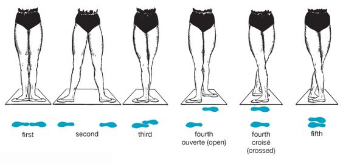

Ballet is all about discipline, grace, elegance and strength.To do that, evey ballet studio has its own rules. However, there are some common senses for the attire.
Subsequently, we will introduce how to wear comfortable, form-fitting clothing and proper shoes.
Learning Ballet Terms
Ballet has evolved into a popular and highly professional dance form with its vocabulary. The vocabulary of ballet has mainly stayed in French, and been learned and communicated by ballet professional dancers from all over the universe.
There are several terms used in this dance form that define the position, steps as well as costumes.
For more, you can look up the website:
Ballet Vocabulary
Hand Positions

image credit: https://www.supercoloring.com/coloring-pages/ballet-positions
Author: Artsashina
Attribution-NonCommercial
1. First Position: arms held out in front of the body with rounded elbows in an oval shape, sloping down from the shoulders.
2. Second Position: arms held out to the sides, horizontal with a slight slope downwards from shoulders to wrist.
3. Third Position: one arm held forward in first position, the other arm held to the side in second position
4. Fourth Position: one arm held to the side in second position, the other arm raised up above the head, held slightly forward.
5. Fifth Position: both arms raised up above the head, held slightly forward
Feet Positions

image credit: https://balletaz.org/classical-ballet/
Attribution-NonCommercial
1. First Position: heels together, toes pointed outwards to the side.
2. Second Position: legs are moved apart, hip width apart, toes pointed outwards to the side
3. Third Position: feet pointed outwards, one foot placed in front of the other with front heel touching the back foot’s instep
4. Fourth Position:
Open: feet pointed outwards, with legs in third position but spread apart
Crossed: feet pointed outwards, legs spread apart with one foot placed in front of the other, and the front foot is placed opposite the toes of the back foot
5. Fifth Position: feet pointed outwards, legs crossed and feet touching, with the heel of one foot placed beside the toes of the other
Tendu

image credit: https://dance.fandom.com/wiki/Tendu
Attribution-NonCommercial
Arabesque

image credit: https://www.pinterest.com/pin/217017275778802816/